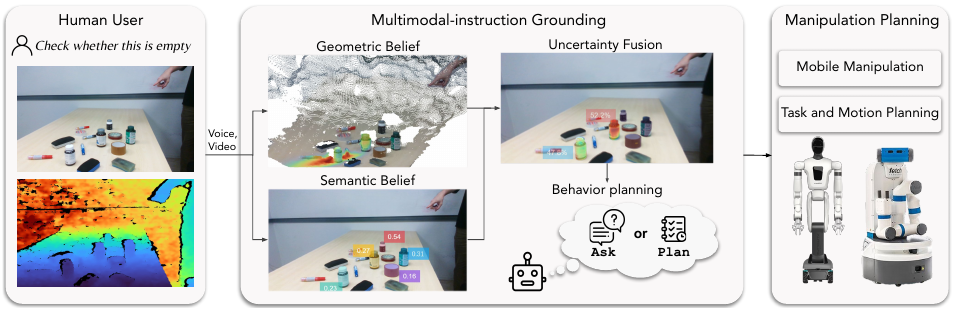
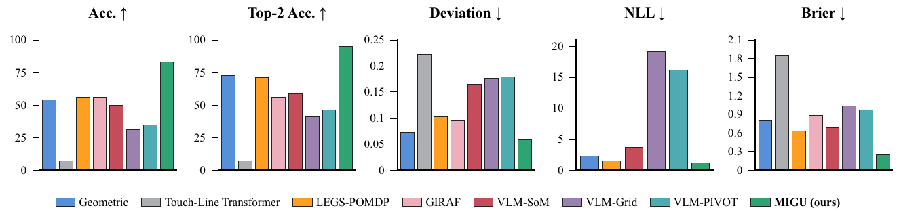

Framework Overview

MIGU models pointing uncertainty in 3D and uses a vision-language model to estimate semantic priors over candidate objects and regions. Bayes-inspired fusion combines these cues into a shared belief. A behavior planner weighs direct execution against an attribute-based clarification question, and the grounded target becomes a goal for mobile manipulation or tabletop task-and-motion planning.
Real-World Benchmark Evaluation

Across 100 real-world instruction-grounding scenarios, MIGU combines language and pointing to outperform the evaluated baselines in grounding accuracy and spatial precision. The lower NLL and Brier scores also indicate better probabilistic predictions, providing a stronger basis for deciding when to act and when to ask for clarification.